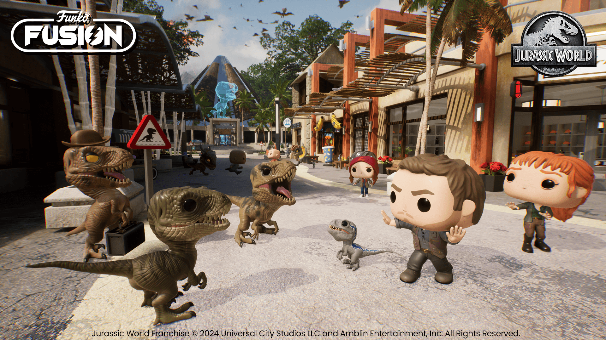
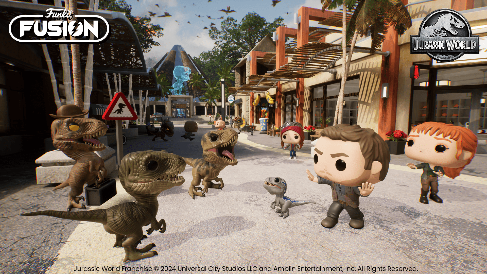
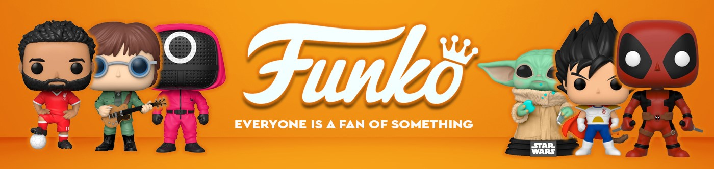

EXCLUSIVOS

En Funkoverse
En FunkoVerse, hemos creado un espacio dedicado exclusivamente a los amantes de los Funko Pop, esas pequeñas figuras que representan mucho más que un simple coleccionable. Aquí podrás descubrir todo lo relacionado con estas icónicas figuras, desde sus orígenes hasta las últimas novedades del mercado.
¿Sabías que cada Funko cuenta una historia única?
Estos pequeños personajes encapsulan décadas de cultura pop, entretenimiento y recuerdos personales. Ya seas un coleccionista experto que busca completar su estantería con piezas raras o alguien que acaba de empezar, en esta página encontrarás todo lo necesario para explorar, disfrutar y aprender sobre esta increíble afición. FunkoVerse no es solo una web, es una comunidad. Únete a nosotros mientras exploramos este fascinante mundo lleno de sorpresas y maravillas.
 

Exclusividad Funko
Como ya habéis podido comprobar, el universo Funko es un entramado interminable de productos de todos los tipos y para todos los gustos, donde podremos encontrar desde figuras de tus películas, series, juegos favoritos, hasta juegos de mesa, pasando incluso por utensilios del hogar como pueden ser tazas, saleros y un monton de cosas. Ahora bien, centrándonos en el multiverso de los Pop!, podemos encontrar una tendencia cada vez más en auge, la "busqueda de las pegatinas", sí, amigos, cada vez son más las personas que prefieren la exclusividad de una etiqueta a la esencia del producto en sí. Es así, la pegatina puede hacer que una figura duplique o triplique su precio regular y es por eso que desde Funko vamos a detallaros cada tipo de pegatina que encontraremos en el mercado.
